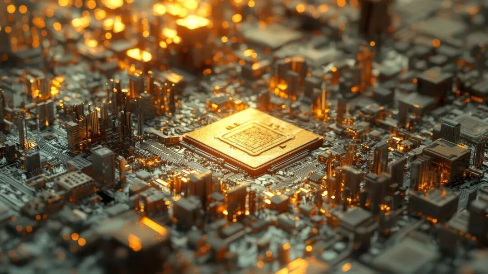
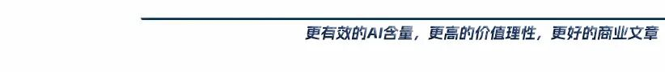
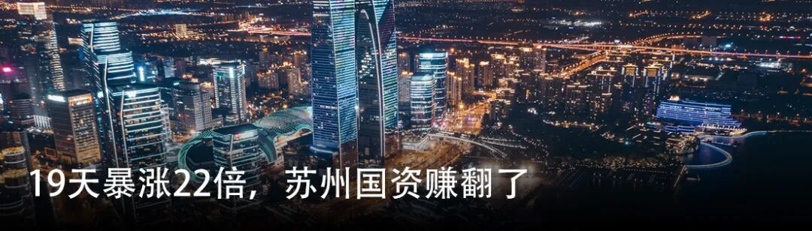
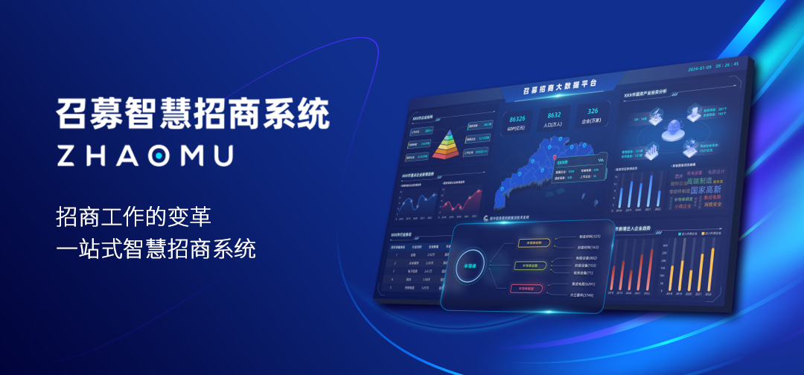

📈 日赚4291万，江西姐弟又要IPO了
Jiangxi siblings IPO with daily profit 42.91M

一个属于存储storage[ˈstɔːrɪdʒ] n. 存储的超级大周期。

手搓量丨95% AI含量content[ˈkɒntent] n. 含量丨5%
“短期缺芯片，长期缺能源energy[ˈenərdʒi] n. 能源，永远缺存储。”
2025年下半年以来，这句话被验证得淋漓尽致——AI大模型竞赛催生出史无前例unprecedented[ʌnˈpresɪdentɪd] adj. 史无前例的的算力饥渴，而算力的背后是存储。HBM被科技巨头疯抢，DDR5价格一路狂飙，NAND闪存涨到渠道channel[ˈtʃænl] n. 渠道商扫货无门。
在这波“超级周期”的推动下，不少存储芯片公司都在加速资本化capitalization[ˌkæpɪtəlaɪˈzeɪʃn] n. 资本化，江波龙便是其中之一。
近日，江波龙向港交所递交submit[səbˈmɪt] v. 递交了上市申请，联席保荐人是花旗和中信证券。
这已经是它第二次冲刺港股，上一次是2025年3月，后来因未完成审核流程搁浅stranded[ˈstrændɪd] adj. 搁浅，此番卷土重来，江波龙在时机拿捏上颇为精准。
就在递表前，公司刚刚交出一份惊艳的一季报：2026年Q1，营收revenue[ˈrevənjuː] n. 营收99亿元，归母净利润38.62亿元，折算下来，平均每天净赚4291万元。更夸张的是股价——在一年前还在70元附近徘徊hover[ˈhʌvər] v. 徘徊，如今已冲破500元，公司市值更是逼近2200亿元。
超级行业周期叠加超级业绩performance[pərˈfɔːrməns] n. 业绩，这次IPO，江波龙摆明了要在最好的时候，讲更大的故事。
江西姐弟卖芯片chip[tʃɪp] n. 芯片，做到了全球第二
与半导体semiconductor[ˌsemikənˈdʌktər] n. 半导体行业普遍的“精英叙事”不同，江波龙的故事是一场标准的草根逆袭。
1996年，高中毕业的江西九江青年蔡华波南下深圳，在一家电子公司干销售sales[seɪlz] n. 销售，凭着一股拼劲很快成了销售冠军，但他心里清楚，给别人打工终归不是长久之计。于是1999年，23岁的蔡华波拉上双胞胎姐姐蔡丽江，两人凑了点本钱，注册register[ˈredʒɪstər] v. 注册了一家公司，取名“江波龙”。
起步阶段，江波龙做的是“倒卖”存储芯片的小生意，靠进货出货赚取差价spread[spred] n. 差价。不过上世纪九十年代的深圳华强北，是个电子electronics[ɪˌlekˈtrɒnɪks] n. 电子产品漫天开花、谁都能赚一把的地方，姐弟俩很快就赚到了第一桶金。
第一次危机crisis[ˈkraɪsɪs] n. 危机发生在2002年。当时蔡华波判断失误，囤了一批AG-AND型的日本闪存芯片，结果市场突然转向NAND Flash标准，货砸在手里卖不出去，公司资金链差点断裂rupture[ˈrʌptʃər] n. 断裂。幸运的是，后来苹果iPod的爆火导致NAND闪存供不应求，价格猛涨，很多公司又开始重新启用AG-AND闪存，江波龙抓住机遇组建技术团队，将手里的存货封装package[ˈpækɪdʒ] v. 封装成U盘卖掉，公司才算挺了过来。
这次踩坑让他明白一个道理：光靠倒买倒卖没有根基，必须要有自己的制造能力，自此江波龙开始从贸易商向技术研发商转型transformation[ˌtrænsfərˈmeɪʃn] n. 转型。
2011年，江波龙推出了自主品牌brand[brænd] n. 品牌FORESEE，主攻企业级市场，顺利拿下了国家电网、中车、比亚迪、传音等大客户。但蔡华波的野心不仅局限在To B市场，于是在2017年，江波龙上演了一场“蛇吞象”，收购acquire[əˈkwaɪər] v. 收购了巨头美光科技旗下的消费级存储品牌Lexar雷克沙，当时后者的年营收几乎是江波龙的三倍。
后面公司的发展也印证了蔡华波的判断，凭借在B端、C端两条腿走路，江波龙打通了全市场，并在2022年8月成功在深交所创业板上市listing[ˈlɪstɪŋ] n. 上市，迎来了高光时刻。
现如今，江波龙已经成为国内存储模组的绝对龙头，产品线覆盖嵌入式embedded[ɪmˈbedɪd] adj. 嵌入式的存储、消费级SSD、企业级SSD、内存条和移动存储。根据最新招股书，按2025年存储产品的收入计，江波龙是全球第二大独立存储器厂商manufacturer[ˌmænjuˈfæktʃərər] n. 厂商及中国最大独立存储器厂商。
没有名校光环halo[ˈheɪloʊ] n. 光环，没有深厚背景，一对江西双胞胎从华强北的一米柜台起步，用二十多年时间做出了一家行业龙头，如今，这对姐弟又带着江波龙来到了港交所门前。
日赚4291万，早期投资人investor[ɪnˈvestər] n. 投资人浮盈超110亿元
回看过去一年的存储芯片市场，用“前所未有”来形容describe[dɪˈskraɪb] v. 形容一点也不夸张。市场数据显示，2026 年一季度，部分规格的存储芯片现货价格较去年同期暴涨surge[sɜːrdʒ] v. 暴涨近 1000%。
站在风口上的江波龙，业绩也在“超强周期cycle[ˈsaɪkl] n. 周期”的影响下水涨船高。根据最新招股书，2025年，公司全年营收227.66亿元，同比增长growth[ɡroʊθ] n. 增长30.36%；归母净利润profit[ˈprɒfɪt] n. 利润14.23亿元，同比增长185%；扣非净利润更是涨rise[raɪz] v. 上涨了6倍多。
真正的爆发explosion[ɪkˈsploʊʒn] n. 爆发还是今年一季度。公司最新财报earnings[ˈɜːrnɪŋz] n. 财报显示，2026年Q1，江波龙营收99亿元，同比增长133%。归母净利润38.62亿元，同比暴增soar[sɔːr] v. 暴增2644%，一个季度的利润已经超过了2025年全年的总和，相当于每天净赚4291万元。
公司业绩的飙升，精准传导transmit[trænzˈmɪt] v. 传导到了二级市场。时间回拨到2025年6月3日，当时江波龙的股价仅为69.76元/股，市值在300亿左右徘徊linger[ˈlɪŋɡər] v. 徘徊；一年后的2026年6月2日，这一数字已经变成了519.5元/股，足足涨了6倍，市值攀升climb[klaɪm] v. 攀升至2197亿元。
蔡氏姐弟的身价worth[wɜːrθ] n. 身价也随之坐上了火箭。截至目前，蔡华波持有江波龙38.5%的股份，姐姐蔡丽江持股shareholding[ˈʃerhoʊldɪŋ] n. 持股3.47%，姐弟合计持股约41.97%，对应市值达到922.36亿元。
不仅创始人，背后投资人同样赚得盆满钵满，这里特别提到的就是国家集成电路产业投资基金fund[fʌnd] n. 基金（以下简称“国家大基金”）。
早在2019年，国家大基金就拿出6亿元，参与了江波龙一轮战略融资financing[faɪˈnænsɪŋ] n. 融资，一举成为公司的第二大股东。虽然基金后来分别在2024年和2025年进行过减持divest[daɪˈvest] v. 减持，但截至今年一季度仍持有5.45%的股份。按照6月2日的股价计算，国家大基金持有市值高达119.78亿元，回报惊人stunning[ˈstʌnɪŋ] adj. 惊人的。
江波龙选在这个节点二度冲刺港股，意图很明显——趁着业绩和估值valuation[ˌvæljuˈeɪʃn] n. 估值都在高点，以最好的价格完成国际化融资。
事实上，与江波龙有类似similar[ˈsɪmɪlər] adj. 类似的想法的不止一家。光是过去的一个月，就有佰维存储、北京君正、力积存储、东芯股份四家相继递表file[faɪl] v. 递表港交所。如果把时间线timeline[ˈtaɪmlaɪn] n. 时间线拉长，今年以来，登陆/递表的存储芯片公司数量更是多达十几家。
而从结果来看——大普微在创业板首日debut[deɪˈbjuː] n. 首日暴涨350%，上市不到两个月股价涨了15倍，长鑫科技更是还没上市，市值就被喊到了2万亿。珠玉在前，整个存储赛道sector[ˈsektər] n. 赛道，仿佛进入了一场集体冲刺资本市场的狂欢。
不过热闹之下，隐忧concern[kənˈsɜːrn] n. 隐忧也被摆在了台面上。
首当其冲的，就是大家不知道这轮超级周期什么时候见顶peak[piːk] v. 见顶。
存储芯片是个标准的“周期行业”——需求爆发、价格飞涨、疯狂扩产、供过于求glut[ɡlʌt] n. 供过于求，这套剧本每隔几年就会重演一次。上一轮高点在2021年到2022年初，紧接着就是2023年的行业寒冬winter[ˈwɪntər] n. 寒冬，那年江波龙亏了8个多亿，不少同行甚至没能挺过去。
这一轮靠AI点燃ignite[ɪɡˈnaɪt] v. 点燃的需求，能持续多久？乐观派认为，AI带来的不是脉冲式爆发，而是指数级增长的结构性structural[ˈstrʌktʃərəl] adj. 结构性的革命。瑞银预测forecast[ˈfɔːrkæst] n. 预测2026年服务器SSD需求增长56%，2027年再增47%。摩根大通更是把这轮周期定义define[dɪˈfaɪn] v. 定义为“更高、更长”的超级周期。
江波龙副总裁闫书印也曾公开表示，过往存储周期跟随消费电子波动fluctuate[ˈflʌktʃueɪt] v. 波动，而这一轮是AI科技革命带来的结构性变化，AI需求呈指数级增长，半年增量即可远超传统消费电子，对产业冲击前所未有。
但谨慎cautious[ˈkɔːʃəs] adj. 谨慎的的声音同样存在。有观点认为，当前的高价必然会刺激stimulate[ˈstɪmjuleɪt] v. 刺激三星、SK海力士以及国内厂商加速扩产，而扩产带来的供给过剩，只是时间问题。
一个值得关注的数据是，2026年第二季度存储价格涨幅已经开始收窄narrow[ˈnæroʊ] v. 收窄，因此不少分析师视2027年为价格拐点的观察窗口。一旦周期掉头，那些在顶点“跑步上市”的公司，很可能要面对市值的剧烈drastic[ˈdræstɪk] adj. 剧烈的回撤。
当然，更深层的问题还在于江波龙在产业链中的位置position[pəˈzɪʃn] n. 位置。
从业务类型来看，江波龙属于存储模组与方案提供商，它的核心原材料高度依赖depend[dɪˈpend] v. 依赖三星、SK海力士、美光、闪迪等海外原厂，这意味着定价权实际捏在别人手里，公司本身无法主导周期。
不过话又说回来，无论周期拐点何时到来，对于从华强北走出来的蔡家姐弟而言，两次IPO已经让他们站上了足够高的台阶plateau[plæˈtoʊ] n. 台阶。剩下的，就是和时间赛跑race[reɪs] n. 赛跑了。
作者author[ˈɔːθər] n. 作者王满华—编辑王庆武


转载reprint[ˌriːˈprɪnt] v. 转载、合作、加入粉丝群请联系小助理
（微信号：ChinaVentureWeixin）


